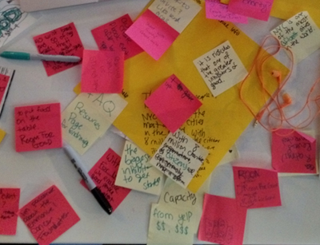
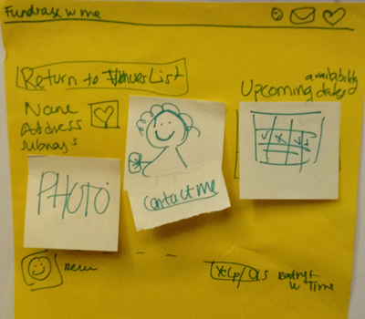
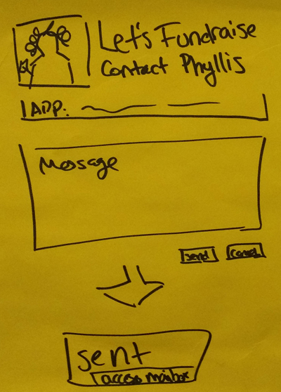
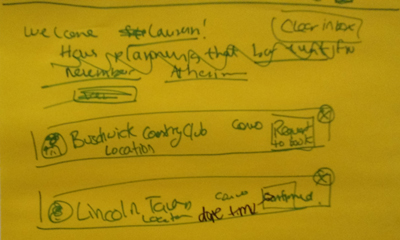
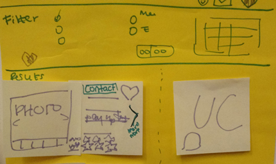
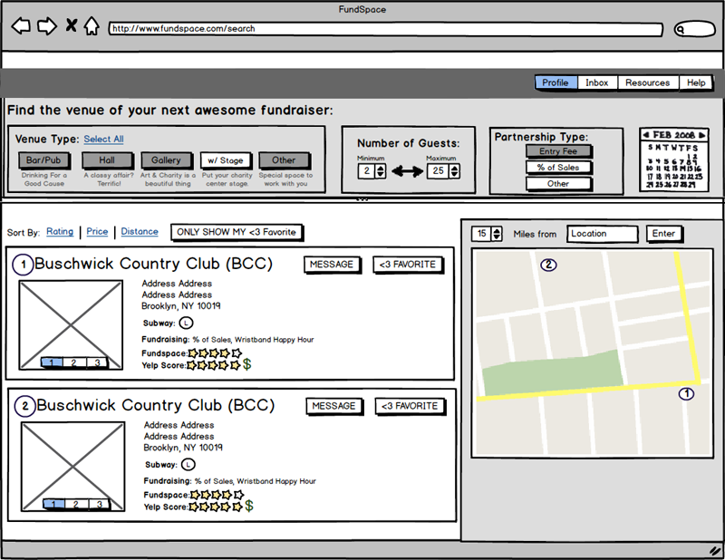
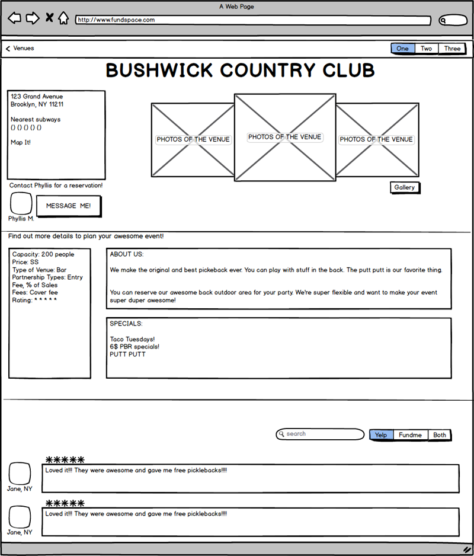
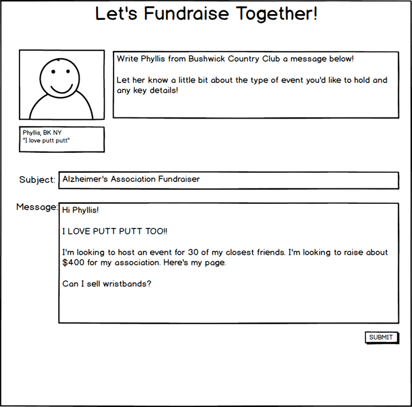

A few months earlier, my friend Luyba had found out about this cool hackathon that was focused on prototyping vs the actual product created, like most other hackathons. Since Luyba is a data scientist, she was intrigued, because this was a hackathon she could participate and be very helpful in. She mentioned it to me, and I thought it was a cool idea. Often, the things that I create are only part of the process, not the final product.
We joined up with our other friend, Stephanie, and started brainstorming ideas. When else can you work on a project where you don't actually have to implement your idea?! We came up with a list of problems we had, and how we could use technology to solve those problems. Since Luyba and Steph are neither designers nor coders, I was very excited to "coach" them through their first hackathon expereince, and teach them some of the basics of user expereince design, and prototyping.
We started the day knowing exactly what we wanted to create - a way to find venues in NYC. We began with brainstorming on Post-It notes and wrote down all the things that we wanted to take into consideration with out product, all the problems we ran into while searching for a venue, and anything else that might have been relevant. We just wanted to get everything on paper to see what we had to work with.

After we wrote down all of our relevant ideas and things to consider, we grouped them into categories, which then turned into how we figured out what features we would want to include on the website. We then moved on to sketching out what we though the screens should look like, based on the features we wanted to include. (Pro Tip: Giant yellow Post-Its are AWESOME for this.) Since we had to present our prototype at the end of the day, we focused on the screens needed to complete the task of booking a venue for the event.




Once we had our quick sketches done, we moved to Balsamiq to create wireframes. This helped us figure out the actual layout, and if we had left anything out. The first screen would be a listing of venues once you put in your inital search criteria.

The second screen would be the venue's profile page on Room for Good. This would give details about the venue, contact information, and reviews aggregated from various websites to help users make a decision.

The final screen was a way for users to message the venue to work out the details of their event. These were the most important screens to get right since we were focusing out prototype on allowing our user to book a venue for their event.

Once we had the wireframes done, we moved to
Wix.com to create a clickable prototype. I had never used Wix before, so there was a bit of a learning curve to the product, but it was an interesting expereince putting the prototype together. While I created the website, Luyba and Steph started working on the presentation. With only 90 seconds for our presentation, we had to make sure that we were clear about what our project was, and what problem we were solving.
Check out our prototype
here!